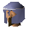

Legends Guard

| Config name | legends_guild_guard2 |
| NPC id | 399 |
| Combat level | hidden |
| Options | Talk-to |
| Category | legends_guard |
| Wander range | 3 tiles from spawn |
| Area folder | area_ardougne_east |
| Defined in | scripts/areas/area_ardougne_east/configs/legends_guild/legends_guild.npc |
Legends Guard
A Legends Guild Guard, he protects the entrance to the Legends Guild.
Show all 1 spawn on the world map → Open in knowledge graph →
Locations
| Area | Coordinates | Level | Count | Map |
|---|---|---|---|---|
| Legends Guild | 2731, 3348 | 0 | 1 | view |
Dialogue
Legends Guard! ! ! Attention ! ! !
Legends GuardLegends Guild Member Approaching!
Legends GuardWelcome <text_gender(
Legends GuardYes <text_gender(
PlayerWhat is this place?
Legends GuardThis is the Legends Guild, <text_gender(
Legends GuardLegendary RuneScape citizens are invited on a quest in order to become members of the guild.
PlayerCan I go on the quest?
The guard gets out a scroll of paper and starts looking through it.
Legends GuardWell, it looks as if you are eligible for the quest. Grand Vizier Erkle will give you the details about the quest. You can go and talk to him about it if you like?
PlayerWho is Grand Vizier Erkle?
Legends GuardHe is the head of the Legends Guild. His full name is Radimus Erkle. Would you like to talk to him about the quest?
PlayerYes, I'd like to talk to Grand Vizier Erkle.
Legends GuardOk, very well... You need to go into the building on the left, he's in his study.
The guard unlocks the gate and pushes it open for you.
Legends GuardGood Luck!
PlayerSome other time perhaps?
Legends GuardWell, you've completed the required quests. However, you also need to have 107 Quest points. Sorry to disappoint you, but you need . They don't call it the Legends Guild for nothing you know!
Legends GuardI'm very sorry but you need to complete more quests before you can go on this quest.
Legends GuardI'm very sorry but you need to complete more quests before you can go on this quest. Additionally you need to gain . They don't call it the Legends Guild for nothing you know!
PlayerWhich quests do I need to complete?
Legends GuardJust one: .
Legends GuardWell, you'll need to complete the following quests: .
Legends GuardYou also need a total of 107 quest points.
Legends GuardYou already have enough quest points.
Legends GuardThey don't call it the Legends Guild for nothing you know! Best of luck if you intend to become a member!
PlayerOk, thanks.
Legends GuardThat's no problem... Best of luck if you intend to become a member!
PlayerWhat kind of quest is it?
Legends GuardWell, to be honest <text_gender(
PlayerThanks for your help.
Legends GuardYou're welcome...
PlayerHow do I get in here?
Legends GuardWell <text_gender(
Legends GuardIf you want to use the Legends Hall, you'll be invited to complete a quest. Once you have completed that quest, you'll be a fully fledged member of the Guild.
PlayerCan I speak to someone in charge?
Legends GuardWell <text_gender(
PlayerIt's ok thanks.
Legends GuardVery well <text_gender(
Quests
Related NPCs (category legends_guard)
Referenced in scripts
scripts/quests/quest_legends/scripts/legends_guard.rs2